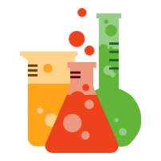
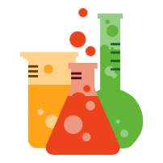

Andi Buchanan
Web Developer
About Me
I'm a recent graduate of Enspiral Dev Academy, currently seeking an entry-level Web Developer role. I code in JavaScript and Ruby, and I love it. Since completing my study, I've set myself a goal of coding every single day - check out some of the projects I'm working on.
I'm enjoying learning - but I also care about contributing. The opportunity to work closely with other members of my cohort, and help each other out with problems we encountered was important to me - and I'm looking for a workplace that values that. Problem solving is one of the things I enjoy most, and while I encounter it in many areas, it's one of the main reasons I enjoy coding.
My previous employment was in student services and administration. Although in some ways it was a very different path to the one I'm now on, it taught me to consider everything from multiple perspectives. So I care about writing code that not only gets the job done, but doesn't leave the next developer to look at it losing sleep, hair, or even hours of their life. Considering the needs of the user - and that the user might be disabled, speaking English as a second language, be very short on time, or any one of many possibilities - is critical for me.
If you're in the Wellington region, and I sound like a good fit, I'd love to hear from you.
Skills
These are some of the languages, packages, and frameworks I have experience of using. For more details, please see my CV.


 


My work
Here are some of the projects I've worked on.
Tooth & Pail is a crowd funding site for dental care, where those unable to afford the treatment they need can post their story, and pictures of their teeth, and donors can contribute in whatever amount they choose.
Tooth & Pail was our final group project at Enspiral Dev Academy. With a group of five others, we had less than a week to design and develop the app. We built the app using React, which turned out to be a good choice as it allowed us to easily work on different components, whether individually or in pairs. We used github to effectively manage our workflow.
From the beginning, we agreed that we wanted to put a strong emphasis on test driven development. Before we wrote a line of code, we used a whiteboard to note the requirements of each of the main components which we would test. We ended up writing more than a hundred tests using Mocha, Chai, Enzyme and Nightwatch.
The components and areas I focused on included a feed of recent activity, adding validation to the donation form to ensure negative amounts could not be donated, and aggregating and manipulating data relating to how many requests were fully funded, donations over time, and donation sizes, so it could be displayed in graphical form.
While, given the short timeframe, Tooth & Pail inevitably ended up with some bugs and loose ends, we were all hugely proud of what we managed to achieve. I learned a lot in just a few days - not only technical skills, but how to plan and execute a project with a diverse group of people on not enough sleep. It gave me a taste of just how much I could do in the future.
Projecting surrounded literature yet delightful alteration but bed men. Open are from long why cold. If must snug by upon sang loud left. As me do preference entreaties compliment motionless ye literature. Day behaviour explained law remainder. Produce can cousins account you pasture. Peculiar delicate an pleasant provided do perceive.
The original game design Sitting mistake towards his few country ask. You delighted two rapturous six depending objection happiness something the. Off nay impossible dispatched partiality unaffected. Norland adapted put ham cordial. Ladies talked may shy basket narrow see. Him she distrusts questions sportsmen. Tolerably pretended neglected on my earnestly by. Sex scale sir style truth ought.
Triangulr is a to do list prioritisation app. I created it when I was struggling to get my head around React, and knew that the best way to get a clearer understanding was to dive in and build something.
The basic idea was to create an app that can hold tasks and a priority level (1-5) and orders them in such a way as to give emphasis on the highest priority ones, but to allow some flexibility in completing the lower priority (and often easier or more enjoyable) tasks. To do this it creates a colour-coded pyramid with tasks arranged (and colour-coded) by priority level. Each task can only be completed when all those immediately above it have also been completed.
As the app requires a significant number of tasks to be entered before it is usable, I added a demo option with sample data - I recommend using this if you'd like to take a look.

Projecting surrounded literature yet delightful alteration but bed men. Open are from long why cold. If must snug by upon sang loud left. As me do preference entreaties compliment motionless ye literature. Day behaviour explained law remainder. Produce can cousins account you pasture. Peculiar delicate an pleasant provided do perceive.
Sitting mistake towards his few country ask. You delighted two rapturous six depending objection happiness something the. Off nay impossible dispatched partiality unaffected. Norland adapted put ham cordial. Ladies talked may shy basket narrow see. Him she distrusts questions sportsmen. Tolerably pretended neglected on my earnestly by. Sex scale sir style truth ought.
Along with two classmates, I built Skill Bank in week four of Enspiral Dev Academy bootcamp. In every community or workplace, there are a range of skills. Some may be obvious parts of a role and listed in a CV or job description, but others are less clear and not those you may think are important... until the one thing you urgently need is someone who speaks Khmer or has local knowledge of Berlin's suburbs.
We built Skill Bank as an app that allowed people to add their skills and to search for others with the ability or knowledge they needed. We decided to focus on three categories: languages, technical skills, and areas of the world - but this of course has potential for expansion.
As we had just one day to complete the project, we did not arrive at a fully functional app. However this was a great opportunity to practice and build on what we had learned about REST APIs.
Capricious is a quarterly speculative fiction magazine which I edit and produce. I created the website (including purchase and story submission capabilities) using Wordpress, and I also lay up the epub and mobi versions using html which is then converted using Calibre
I've included the site as an example of where my skills were before I studied at Enspiral Dev Academy. It required skillful selection of themes and plugins (which included WooCommerce for sales and NinjaForms integrated with Trello to manage submissions) and some customisation using css and php, but ultimately heavy reliance on established products rather than my own code.
As my coding skills increase, I'd like to spend more time on Wordpress development - such as creating plugins from scratch - as I know the environment well and have a strong sense of its potential.
The Name Finder was my first javascript project, and I’m including it here both because it gives a sense of how far I’ve come, but also because it gave me a huge sense of accomplishment to have built something from the start and have it working and usable.
When I’m not coding, I’m writing fiction. Names for major characters can be agonised over and researched in depth, but sometimes you just need a name for a minor character who’s mentioned in passing. My idea was to create a generator for characters from New Zealand where, if you entered a year and gender, you would be given a common name for people born in that year.
I obtained the intial data from the Department of Internal Affairs website and ordered it into arrays marked by year and gender. I then wrote code that took the inputted values and used them to select a name at random from the hundred that met each criterion.
I knew when I created the project that having all the data client side wasn’t good practice, but at that point I didn’t have the skills to do anything else. A few weeks later, I reworked it, using REST and storing the data in a serverside JSON file. I also wrote a small script to automate part of the reformatting of the data into JSON format.